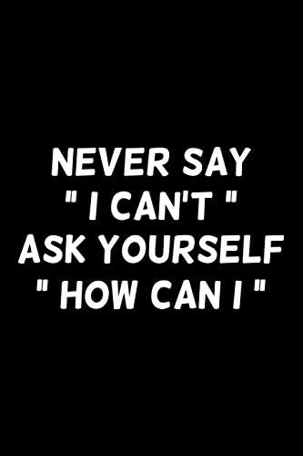

|  |
SAMREEN KHALILSamreenKhalil53@gmail.com 03409421418 |
Seeking opportunities in a chanllenges enviroment and grow as
proficient,innovation,committed and to contribute my professional
skills as a team player to an esteemeorganizationwith an ever
learning and dynamic aptitude serving for organization's as well as
self-prestige.
From G.G.D.Gulshan Rehman College Peshawar (2022)
Sir Sayed Islamia Model H/School & College (2020)
Pakistan Industrial Technical Assistance Center Peshawar under
the Supervision of NAVTTC, Prime Minister Kamyab Jawan Program.
CMS (Construction and Management Services Peshawar under the
supervision of Pakistan Industrial
Technical Assistance Centre Peshawer Region)
Al khidmat foundation school Peshawar
In Mutual funds and stock exchange with AL MEEZAN Investment